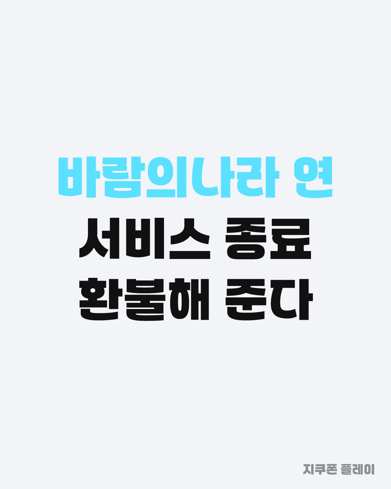
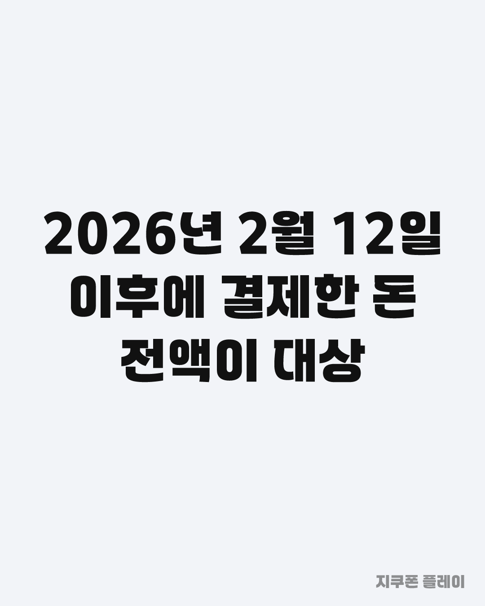
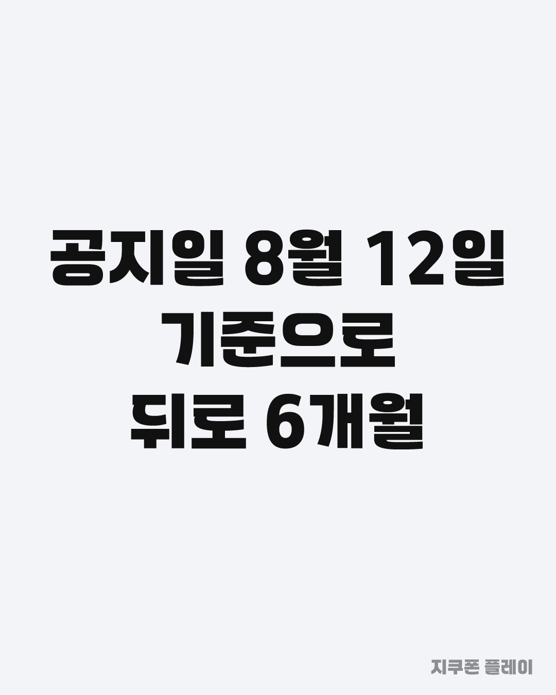
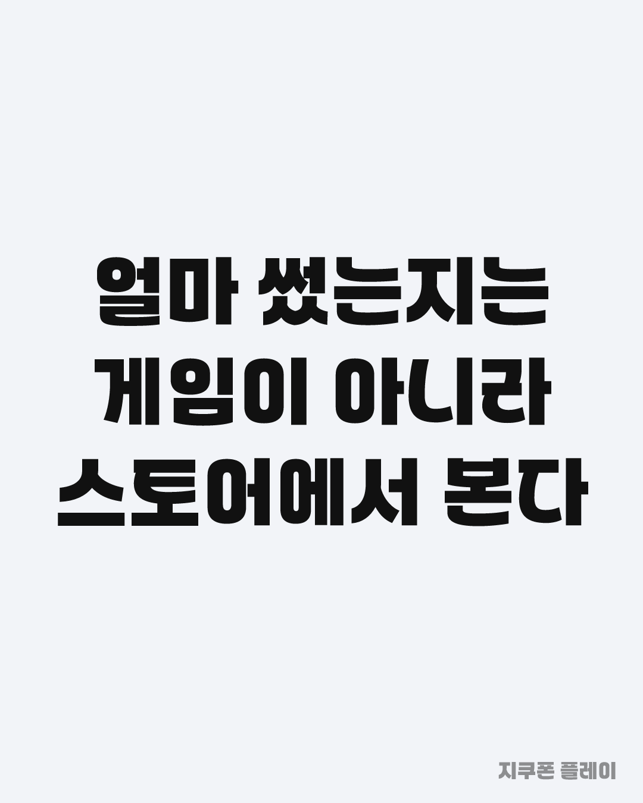
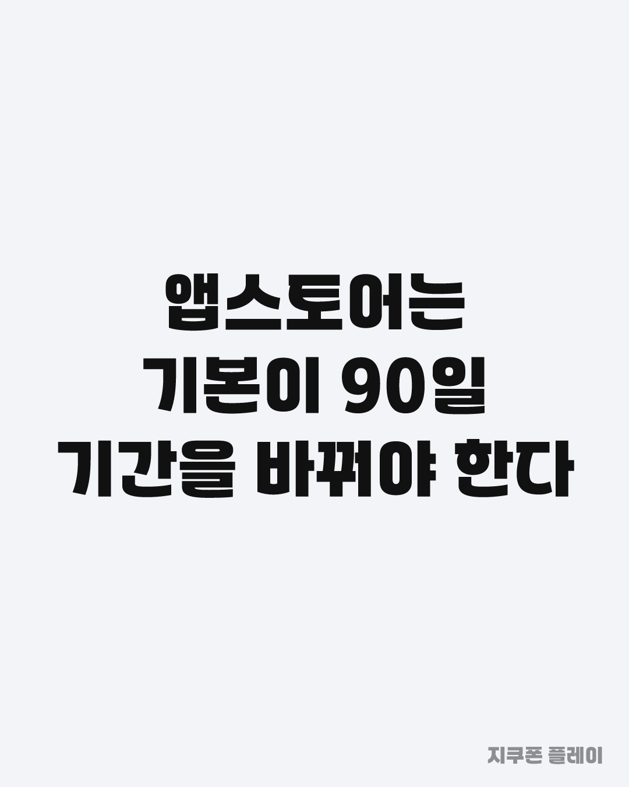
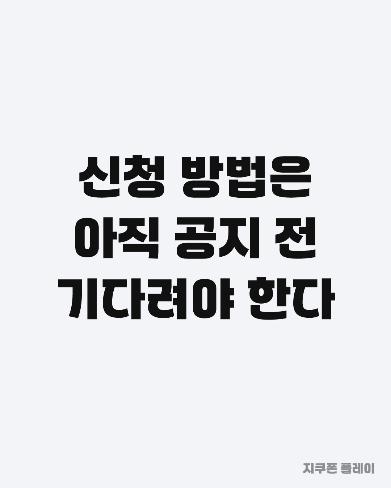
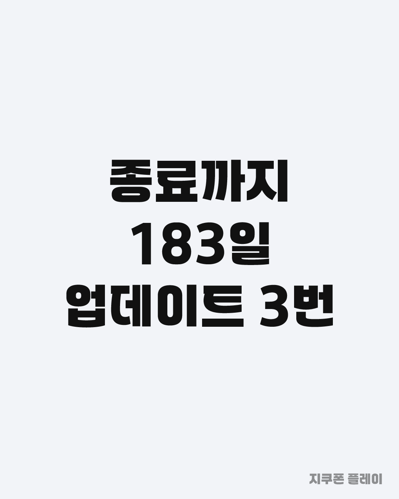
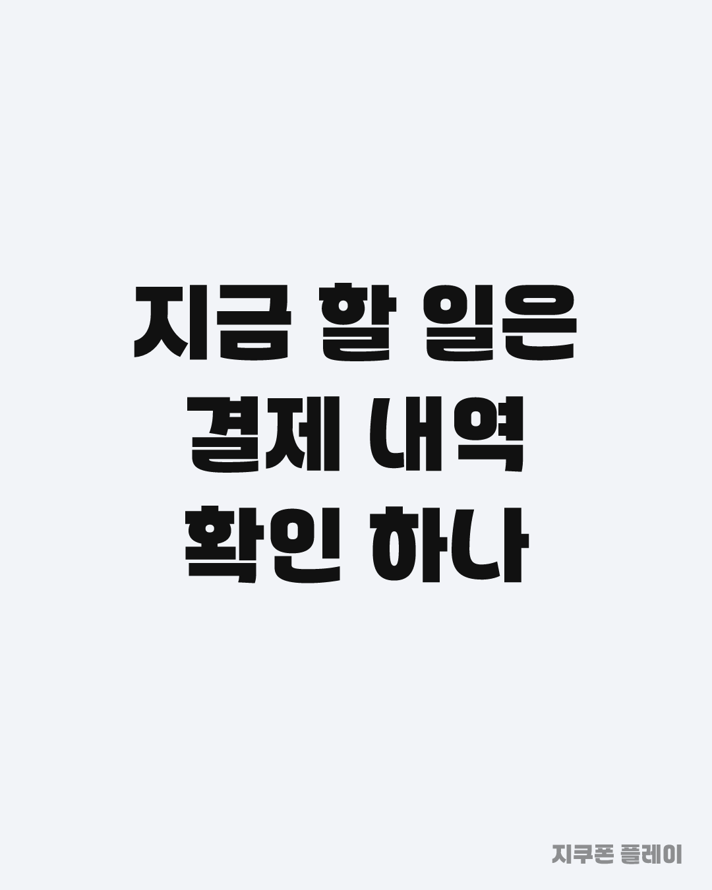

P1 · 후킹형 · 카드 1, 2, 3
바람의나라 연이 2027년 2월 12일에 서비스를 종료합니다. 그런데 그냥 닫는 게 아니라 환불이 붙었습니다. 공지일인 8월 12일 기준으로 뒤로 6개월, 그러니까 2026년 2월 12일 이후에 결제한 금액이 전액 환불 대상입니다. 6년 7개월 서비스한 게임이고 출시 때는 구글 플레이 매출 2위까지 갔었습니다. 이 게임 하셨던 분 계신가요?
카드는 길게 눌러 저장하세요. 링크는 조회수 2,000을 넘긴 뒤 답글로만 답니다.








바람의나라 연이 2027년 2월 12일에 서비스를 종료합니다. 그런데 그냥 닫는 게 아니라 환불이 붙었습니다. 공지일인 8월 12일 기준으로 뒤로 6개월, 그러니까 2026년 2월 12일 이후에 결제한 금액이 전액 환불 대상입니다. 6년 7개월 서비스한 게임이고 출시 때는 구글 플레이 매출 2위까지 갔었습니다. 이 게임 하셨던 분 계신가요?
바람의나라 연 환불에서 헷갈리는 부분을 정리했습니다. 내가 6개월간 얼마 썼는지는 게임 안이 아니라 스토어 계정에 남습니다. 인앱결제는 게임사가 아니라 스토어가 처리하기 때문입니다. 여기서 함정이 하나 있습니다. 앱스토어는 구입 내역이 기본으로 최근 90일만 보입니다. 대상 구간이 6개월이라 목록 위 기간 필터를 바꾸지 않으면 2월분이 통째로 안 나옵니다. 신청 방법은 아직 공지 전이라 지금 할 수 있는 건 결제 내역 확인까지입니다. 혹시 벌써 확인해 보셨나요?
바람의나라 연 종료까지 183일 남았습니다. 바로 닫는 게 아니라 그 사이 업데이트가 세 번 더 예정돼 있습니다. 붉은 보석은 선율이라는 새 재화로 바뀌고, 그 선율은 다시 푸른 보석으로 교환됩니다. 충전해 둔 게 사라지는 건 아니고 거래소에서 쓸 수 있는 형태가 되는 구조입니다. 다만 이건 게임 안 처리고 현금 환불과는 별개 트랙입니다. 둘을 섞으면 재화로 바뀌었으니 환불은 없는 거 아닌가 하고 오해하기 쉽습니다. 남은 183일 동안 접속하실 생각 있으신가요?
바람의나라 연 서비스 종료와 환불 정리 2027년 2월 12일 종료, 공지일 기준 뒤로 6개월인 2026년 2월 12일 이후 결제분이 전액 환불 대상입니다. 내가 얼마 썼는지는 스토어 계정에서 확인합니다. 앱스토어는 기본이 최근 90일이라 기간을 바꿔야 2월분이 보입니다. 신청 방법은 아직 공지 전입니다. #바람의나라연